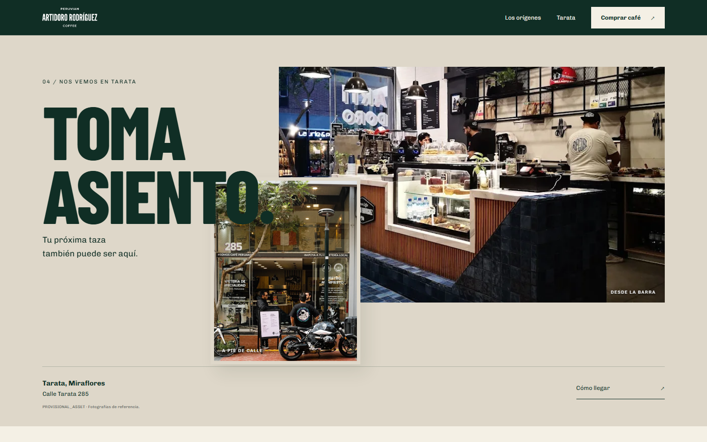
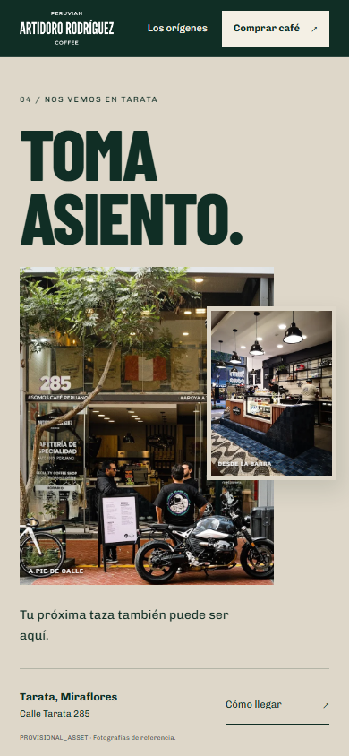

ARTIDORO / REVISIÓN · 26.09.2026
Nos vemos en Tarata.
Interior, personas, fachada y un guiño a las motos. Dos fotografías reales de referencia, una entrada breve y una composición propia para cada pantalla.
Ver 04 en la demo ↗Entrega, archivos y QAEl servidor local debe estar activo para la demo. Esta galería funciona al abrir el archivo localmente. Checkpoint previo 3830028; revisión sin commit final.
04 — Composición final




El interior aparece primero; la fachada entra con un pequeño desfase y el título acompaña. Después quedan en reposo. Scroll libre, una sola entrada, movimiento reducido y fallback sin JavaScript.
Fotografías de referencia existentes, sin generación ni retoque. Coste adicional: US$0. La autoría/licencia sigue pendiente de confirmar para un uso público definitivo.
Ritmo con el resto de la home


Home completa actualizada
Capturas con movimiento reducido e imágenes decodificadas; 03 muestra su poster. Pulsa para abrir a tamaño completo.